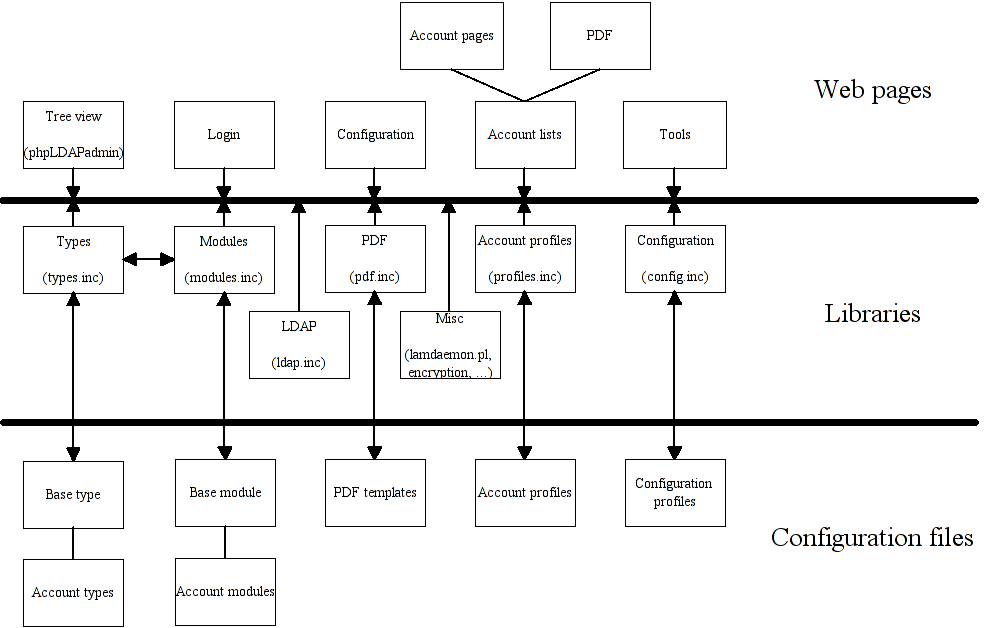

LDAP Account Manager - Code overview
These documents are supposed to give developers who want to modify LAM
an overview of the codebase. It focuses mainly on what is done to
generate the HTML output and the most important functions provided by
the library files.

Web pages
Libraries
Configuration files
Howtos
Specifications